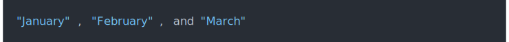
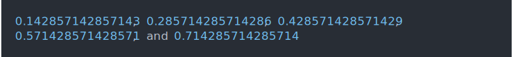
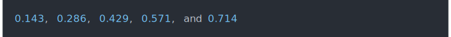
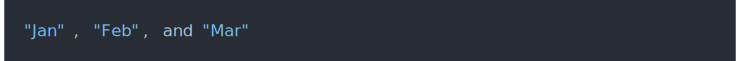

| cli_format {cli} | R Documentation |
This function can be used directly, or via the {.val ...} inline
style. {.val {expr}} calls cli_format() automatically on the value
of expr, before styling and collapsing it.
cli_format(x, style = NULL, ...) ## Default S3 method: cli_format(x, style = NULL, ...) ## S3 method for class 'character' cli_format(x, style = NULL, ...) ## S3 method for class 'numeric' cli_format(x, style = NULL, ...)
x |
The object to format. |
style |
List of formatting options, see the individual methods for the style options they support. |
... |
Additional arguments for methods. |
months <- month.name[1:3]
cli_text("{.val {months}}")

nums <- 1:5 / 7
cli_text("{.val {nums}}")

nums <- 1:5 / 7
divid <- cli_div(theme = list(.val = list(digits = 3)))
cli_text("{.val {nums}}")
cli_end(divid)

It is possible to define new S3 methods for cli_format and then
these will be used automatically for {.val ...} expressions.
cli_format.month <- function(x, style = NULL, ...) {
x <- encodeString(substr(x, 1, 3), quote = "\"")
NextMethod("cli_format")
}
registerS3method("cli_format", "month", cli_format.month)
months <- structure(month.name[1:3], class = "month")
cli_text("{.val {months}}")
